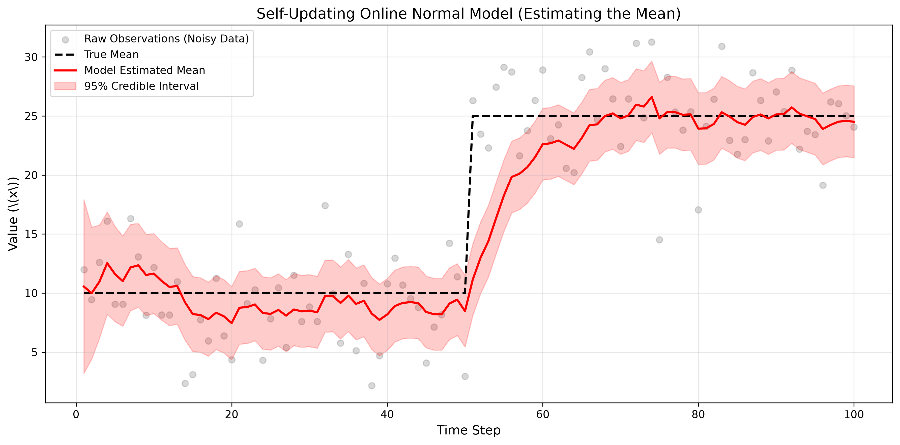

Normal-Normal Conjugate Models with Precision Discounting
The previous chapters dealt with discrete counts and probabilities. But what if we are tracking a continuous variable, like the average temperature of a reactor, the height of a population, or the price of a stock? For this, we use the Normal (Gaussian) distribution.
In the Normal-Normal model, we assume the data is normally distributed, and we want to estimate its true mean \(\mu\). To keep the math perfectly conjugate, we assume the measurement noise (variance) of our sensors is known, and we place a Normal prior on the mean.
We observe data points \(x\), drawn from a Normal distribution with an unknown mean \(\mu\) and a known variance \(\sigma^2_{\text{data}}\).
Our prior belief about the mean is also a Normal distribution, with a prior mean \(\mu_0\) and prior variance \(\sigma^2_{\text{prior}}\).
To update a Normal prior with a Normal likelihood, it is mathematically elegant to use precision (\(\tau\)), which is the inverse of variance (\(\tau = 1/\sigma^2\)).
When we observe a new data point \(x\), the new precision and new mean are calculated as:
This shows that the new mean is simply a precision-weighted average of our prior belief and the new data.
As we observe more and more data, our precision \(\tau_{\text{new}}\) grows infinitely large (our variance shrinks to zero). The model becomes incredibly confident in its estimate of the mean.
If the underlying true mean suddenly changes (e.g., a machine starts drifting out of calibration), the model will stubbornly reject the new data. Because its historical precision is so massive, the new data point will barely move the expected mean.
To make the model agile, we must artificially inflate our uncertainty about the old mean before adding the new data. We do this by multiplying the prior precision by a forgetting factor \(f\) (where \(0 < f \le 1\)).
Why this works: By setting \(f = 0.85\), we reduce our precision by 15% at every step. This widens the variance, making the model "humble" again. This allows the red line to quickly pivot and track the new mean when a sudden shift occurs.
In this simulation, we take noisy sensor readings (standard deviation of 4) of a true mean that starts at 10. At step 50, the true mean abruptly jumps to 25.

import numpy as np
import matplotlib.pyplot as plt
from scipy.stats import norm
import os
# Ensure the images directory exists
os.makedirs('images', exist_ok=True)
class FastOnlineNormalModel:
def __init__(self, mu_prior=0.0, var_prior=100.0, known_var=16.0, forgetting_factor=1.0):
self.mu = mu_prior
self.var = var_prior
self.known_var = known_var
self.ff = forgetting_factor
def update(self, x):
# Convert variances to precisions (1/variance)
prior_precision = 1.0 / self.var
# Apply forgetting factor to prior precision (inflate variance)
discounted_precision = prior_precision * self.ff
data_precision = 1.0 / self.known_var
# Calculate new precision and new variance
new_precision = discounted_precision + data_precision
self.var = 1.0 / new_precision
# Calculate new mean
self.mu = (discounted_precision * self.mu + data_precision * x) / new_precision
def get_credible_interval(self, confidence=0.95):
lp = (1.0 - confidence) / 2.0
up = 1.0 - lp
std_dev = np.sqrt(self.var)
return norm.ppf(lp, loc=self.mu, scale=std_dev), norm.ppf(up, loc=self.mu, scale=std_dev)
# 1. GENERATE DATA (True mean jumps from 10 to 25 at step 50)
np.random.seed(42)
n_steps = 100
true_mu_phase1 = 10
true_mu_phase2 = 25
true_var = 16.0 # Known measurement noise (standard deviation of 4)
data_list = []
for i in range(n_steps):
true_mu = true_mu_phase1 if i < 50 else true_mu_phase2
data_list.append(np.random.normal(true_mu, np.sqrt(true_var)))
# 2. INITIALIZE MODELS
# Very weak prior (var=100), and we know the data variance (16)
standard_model = FastOnlineNormalModel(0, 100, true_var, forgetting_factor=1.0) # Static
fast_model = FastOnlineNormalModel(0, 100, true_var, forgetting_factor=0.85) # Dynamic
# Lists for plotting
std_means, fast_means = [], []
fast_lb, fast_ub = [], []
# 3. RUN SIMULATION
for x in data_list:
standard_model.update(x)
fast_model.update(x)
std_means.append(standard_model.mu)
fast_means.append(fast_model.mu)
lb, ub = fast_model.get_credible_interval()
fast_lb.append(lb); fast_ub.append(ub)
# 4. PLOT
plt.figure(figsize=(12, 6))
plt.scatter(range(1, n_steps + 1), data_list, alpha=0.3, color='gray', label='Noisy Observations')
plt.plot(range(1, n_steps + 1), [10]*50 + [25]*50, 'k--', linewidth=2, label='True Mean')
plt.plot(range(1, n_steps + 1), std_means, 'b-', linewidth=2, alpha=0.5, label='Standard Bayes (Slow)')
plt.plot(range(1, n_steps + 1), fast_means, 'crimson', linewidth=2.5, label='Forgetting Model (Fast)')
plt.fill_between(range(1, n_steps + 1), fast_lb, fast_ub, color='crimson', alpha=0.15, label='Fast Model 95% CI')
plt.title('Speeding up Normal-Normal Learning via Precision Discounting', fontsize=14)
plt.xlabel('Time Step')
plt.ylabel(r'Value (\(x\))')
plt.legend(loc='upper left')
plt.grid(True, alpha=0.3)
plt.tight_layout()
# Save to the images folder
plt.savefig('images/normal_graph.png', dpi=300, bbox_inches='tight')
plt.show()